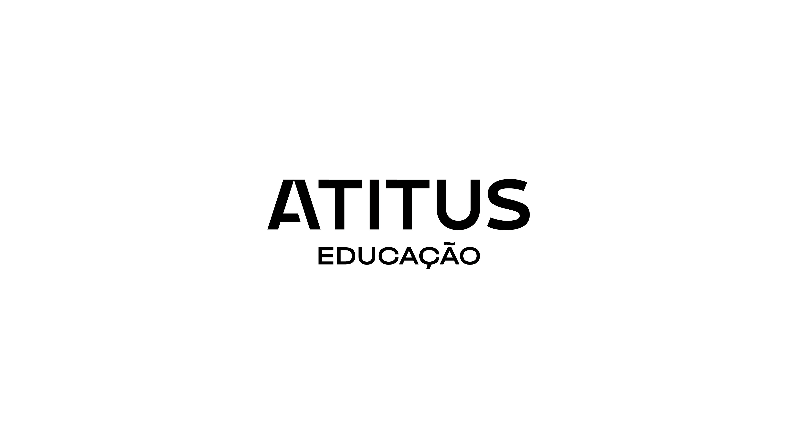

Sobre mim
Me chamo Lucas Wesendonck sou um entusiasta da tecnologia,tenho 24 anos de idade, sempre buscando novas formas de expandir meu conhecimento e explorar as inovações que o setor oferece.
Com um forte interesse por desenvolvimento tecnológico e inovação digital, acredito que a tecnologia tem o poder de transformar não só empresas, mas também a forma como vivemos e trabalhamos. Meu objetivo é construir uma carreira que me permita atuar remotamente, em home office, de forma eficiente e colaborativa, contribuindo com soluções criativas e impactantes para os desafios do dia a dia.
Possuo um perfil dinâmico e estou constantemente me aprimorando, seja por meio de estudos, cursos ou projetos. Gosto de me manter atualizado sobre as últimas tendências do mercado, desde novas ferramentas tecnológicas até práticas de gestão de equipes remotas. Valorizo a flexibilidade e a autonomia que o trabalho remoto proporciona, permitindo um equilíbrio entre produtividade e qualidade de vida.
Formação
Terminei meu ensino médio no Colégio Estadual Carneiro de Campos e atualmente estou cursando a gradução de Bacharel em Ciência da Computação na Universidade Atitus, com previsão de conclusão no primeiro semestre de 2025.
Cursos
Realizei os seguintes cursos a longo da minha jornada acadêmica:
Workshop de Desenvolvimento de Jogos para Dispositivos Móveis Data: 06 de março de 2024 Local: Universidade Tecnológica Federal do Paraná - Campus Pato BrancoPPGA Talks: Cultura Organizacional para Inovação IMED Data: 13 de junho de 2024 Local: Passo Fundo
AWS Academy Graduate - AWS Academy Introduction to Cloud Semester 1 Emitido por: Amazon Web Services (AWS) Data da Verificação: Junho de 2024
Carreira
Minhas experiências profissionais até o momento:
Técnico de Controle de Produção Empresa:MaxiPlast Embalagens Período: Maio de 2020 - Julho de 2023 (3 anos e 3 meses) Atribuições do cargo: Trabalhou em conformidade com normas e procedimentos técnicos. Realizou apontamento da produção, assegurando qualidade e confiabilidade das informações. Utilizou sistemas ERP da Senior Sistemas e Iniflex da Projedata para gestão de produção. Assistente de Suporte/Atendimento Empresa:Net Onze Provedor De Acesso A Internet Ltda Período:Julho de 2023 - Presente (1 ano e 3 meses) Atribuições do cargo: Atendimento ao cliente via telefone e WhatsApp. Conferência de sinal de internet e telefone. Instrução de clientes sobre serviços de internet, incluindo roteadores, configuração de equipamentos e planos de internet